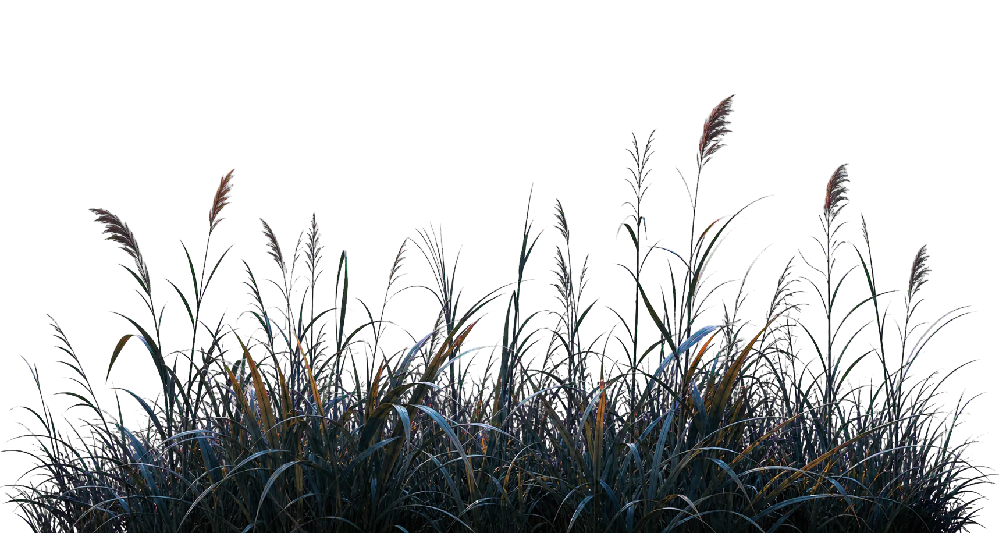

A collection of security systems, practical products, and experiments. Browse the interfaces, then step inside the engineering.
FIELD NOTES / THE ENGINEERING
Beyond the interface.
Decisions, constraints, and the work behind the screen.
作品 03 / 06Full-stack product · Email intelligence
InboxIQ
A product built around the moment before Send. Gmail conversations become opportunities, editable drafts, and a reviewable next step—with the user in control of every outgoing reply.
ReactTypeScriptExpressBetter AuthSupabase
Live application · AI-assisted drafts · Human-reviewed sending
Three signals, one review trail. Identifier checks, image-forensics heuristics, and a local audit chain make document decisions inspectable—and keep the limits of each signal visible.
Make the invisible path of a message visible. A browser-based exploration of protocol layers, headers, and encapsulation, with deliberate step-by-step playback.
From a point on a map to a resolved inspection. An operational prototype connecting explainable risk factors, geospatial context, and maintenance evidence.
From security events to evidence-linked investigations. A SOC prototype with correlation rules, incident timelines, access controls, and an auditable response workflow.
Turn connected email conversations into a reviewable lead workflow, with opportunity detection, contextual drafts, and explicit approval before sending.
A library discovery and reservation prototype with searchable books, detail pages, a library map, and an Android project powered by Capacitor.
ReactPublic source

02 — The Journal人物
A NOTE FROM THE BUILDER
Curiosity, put into practice.
I like understanding a system well enough to build it—and then asking where it might break.
I’m Debayan, a third-year cybersecurity student at MPSTME, NMIMS in Mumbai. Security gives me the questions; building software gives me a way to test them.
That takes different forms: following an event into an incident in AEGIS-X, examining document signals in Tri-Shield, or bringing a real email workflow to life in InboxIQ.
I handle implementation end to end. For the team projects here, teammates supported research and presentations. I’m now looking for a cybersecurity internship where I can contribute that practical approach and keep learning.
Four disciplines, connected to the work that demonstrates them. Open a discipline to inspect the context.
01
Security engineering
Detection, identity & integrity
Python · FastAPI · OpenCV · SHA-256+
Project experience
Event correlation, role-based authorization, image-forensics heuristics, and audit trails. I build visible decision paths and document what the signals can and cannot establish.
Authenticated workspaces, scoped data access, Gmail integration, persisted workflows, and shared web/mobile interfaces. InboxIQ demonstrates the full path from a connected account to a reviewed draft.
Networking, data structures, operating-system foundations, and cryptography through MPSTME coursework. The TCP/IP simulator turns protocol encapsulation into an interactive learning model.
Versioned implementations, testable APIs, geospatial interfaces, and cloud deployment code. Wireshark and Nmap belong to my independent lab practice; AWS foundations are supported by training and project infrastructure.
Exploring prompt-injection detection with word- and character-level TF-IDF models and adversarial prompt variants. The public frontend is available as a preview; its detector service was unavailable at the last check.
CYBER LAB · DEFENSECryptography and Password Security Lab
Try a fictional password. This character-pool model assumes uniformly random, independent characters; it cannot detect reused passwords, dictionary words, or breached credentials. Estimates are educational, not a guarantee of strength.
A conceptual TCP three-way handshake followed by an illustrative TLS ClientHello. No network traffic is sent. This is not a full TLS implementation: certificate verification, server negotiation, and actual encryption are outside this animation.
CLIENT192.168.1.42
SYN
SANCTUARY203.0.113.19
Ready to initialize handshake...
WIRESHARK PROTOCOL TRACE:
No packets captured yet. Press 'Send SYN' to initiate.